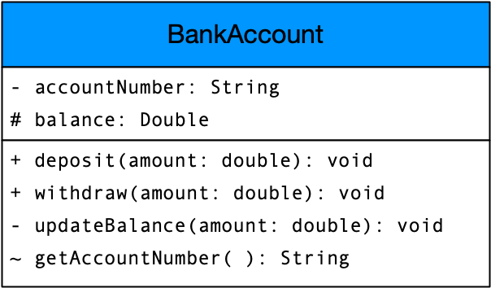

A Unified Modeling Language (UML) class diagram visually represents a system’s structure in software engineering. It clearly displays classes with their attributes, operations, and the relationships between classes. These diagrams effectively model the static structure of a system and serve as a fundamental component of the UML, providing developers and stakeholders with a standardized way to understand system architecture.
In UML (Unified Modeling Language), a classifier is a broad term for an element that defines both behavioral and structural features. Classifiers serve as high-level abstractions that represent groups of objects (or other entities) sharing common characteristics.
Examples of classifiers in UML include, but are not limited to:
A class serves as a blueprint for creating objects. Classes provide structure, promote code reuse, and model real-world concepts in software systems. Classes are divided into three compartments.

BankAccount).accountNumber, balance).deposit(), updateBalance()).Visibility markers indicate the accessibility of attributes and methods within a class.
+ (Public): The attribute or method is accessible from any class.- (Private): The attribute or method is accessible only within the same class.# (Protected): The attribute or method is accessible within the same class and its subclasses.~ (Package-private): The attribute or method is accessible within the same package.Attributes in a UML class diagram represent the properties or data fields of a class. They are typically written in the following format:
visibility (optional) specifies access control (+ for public, - for private, # for protected, ~ for package-private).name is the attribute’s identifier.type defines the data type of the attribute.multiplicity (optional) specifies how many values the attribute can hold when representing an internal collection.= defaultValue (optional) assigns an initial value to the attribute.Methods (also called operations) in a UML class diagram represent the functions or behaviors that a class can perform. They are typically written in the following format:
visibility (optional) specifies access control (+ for public, - for private, # for protected, ~ for package-private).name is the method’s identifier.parameterList defines the method’s input parameters, including their names and types.returnType specifies the type of value the method returns.An abstract class serves as a blueprint for other classes, allowing shared behavior while preventing direct instantiation. It may contain both abstract methods (without implementation) and concrete methods (with implementation). In UML, abstract classes appear as class rectangles with the class name italicized.
An interface defines a contract that implementing classes must follow, specifying methods they must provide. In UML, interfaces appear as class rectangles with «interface» labeled above the name.
Note
Interface methods are shown without implementation details because interfaces cannot contain concrete method implementations.
An enumeration (enum) is a data type that defines a fixed set of named values (constants), commonly used in programming and modeling.
In UML, enumerations are represented as class rectangles with the keyword «enumeration» above the name, and their values (literals) listed inside.
Classes in UML can be connected through six main types of relationships: association, aggregation, composition, inheritance, implementation, and dependency.
These relationships are represented using lines and arrows to visually indicate how classes interact and relate to each other.
Tip
In programming, generalization is called inheritance when a subclass extends a superclass, and realization is called implementation when a class implements an interface.
Association defines a structural relationship between two classes, linking their instances without implying ownership or lifecycle dependencies. It can be bidirectional or unidirectional.
Example: An Employee class is associated with a Company class, where employees work for a company, and a company has multiple employees. Both remain independent entities while referencing each other.
Aggregation represents a “has-a” relationship where one class (the whole) contains references to another class (the part), but the part can exist independently and has its own lifecycle. It is a weaker whole-part relationship without ownership.
Example: A Car has an aggregation relationship with an Engine. A Car contains an Engine, but the Engine can exist independently and be used in another Car or elsewhere.
Composition represents a strong “has-a” relationship where the part cannot exist independently of the whole. If the whole is destroyed, its parts are also destroyed.
Example: A House has a composition relationship with a Room. A House contains Rooms, but a Room cannot exist without a House.
Generalization, also known as inheritance in programming, represents an “is-a” relationship where a subclass inherits the attributes and methods of a superclass. This allows for code reuse and hierarchical organization of classes.
Example: Animal is a generalization of Dog and Cat because both are types of Animal. This means Dog and Cat inherit common attributes and behaviors from Animal.
Realization, also known as implementation in programming, represents a relationship between a class and an interface, where the class commits to implementing the methods defined in the interface.
Example: A Rectangle and a Circle realize the Shape interface, which defines a getArea() method. This means both classes must provide their own implementation of getArea().
Dependency represents a “uses” relationship where one class (the client) relies on another class (the supplier) to perform a task. Changes to the supplier class may impact the client class, but the dependency is typically weak and temporary.
Example: A Checkout class depends on a PaymentProcessor class to handle payments. If the PaymentProcessor class changes (e.g., switching from PayPal to Stripe), the Checkout class may need modifications to accommodate the new implementation.
In UML, multiplicity describes how many instances of one class can be connected to an instance of another class through a given association. This relation is often expressed as a string showing the lower and upper bounds at the endpoints of a connection.
Common multiplicities include:
Let’s look at an example for a hypothetical banking system, involving a Customer and Account. In this example we will assume a simple association between the two classes.
Let’s consider the relation between the customer and the account.
1..5 placed at the connection’s end defines the range of possible accounts.Note
We read this as “Each customer has between 1 and 5 accounts.”
Now, we consider the relation between bank account and customer.
1..2 placed at the connection’s end defines the range of possible customers.Note
We read this as “Each account belongs to 1 or 2 customers.”
Finally, we can combine both multiplicities into the same diagram to express both directions:
Note
One customer has 1 to 5 bank accounts and one bank account belongs to 1 or 2 customers.
Stereotypes are UML extension mechanisms that classify and add specific meaning to model elements. They appear enclosed in guillemets (« and ») and are typically placed above or before the element name. Stereotypes modify the semantics of model elements by indicating specialized types with distinct properties and behaviors.
Note
Guillemets are pair of punctuation marks in the form of sideways double chevrons (« and ») used in UML to denote stereotypes.
Examples include «entity», «boundary», and «control» from the GRASP (General Responsibility Assignment Software Patterns) patterns, which distinguish different roles in a system. These represent true extensions to the base UML vocabulary.
It’s important to note that UML also includes built-in keywords that use the same guillemet notation but represent core language constructs rather than extensions.
Elements like «interface» and «enumeration» are considered keywords in the UML specification rather than stereotypes, as they represent fundamental UML constructs. Though visually similar to stereotypes, these keywords define core modeling concepts within the UML standard itself.